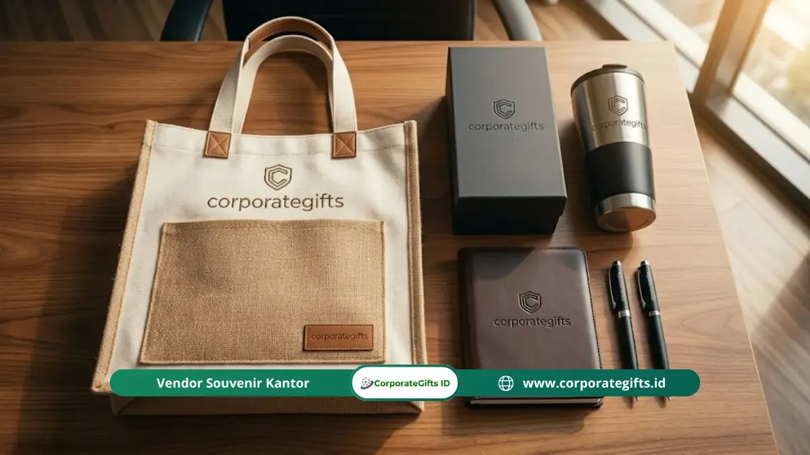

Corporate Gifts ID - Memilih vendor seminar kit korporat yang tepat berarti membandingkan portofolio, meminta sampel fisik, memverifikasi kapasitas produksi, dan mengonfirmasi transparansi harga sebelum kontrak ditandatangani. Proses ini sebaiknya dimulai minimal 45 hari sebelum acara agar kualitas dan jadwal pengiriman tetap terjaga sempurna.
Poin Kunci Pengadaan Vendor Seminar Kit:
- Timeline Pengadaan H-45: Evaluasi calon vendor idealnya dimulai minimal 45 hari sebelum hari-H acara demi mengantisipasi kendala teknis produksi.
- Verifikasi Rekam Jejak: Portofolio proyek korporat sejenis adalah indikator terkuat profesionalisme dan kepatuhan standar mutu vendor.
- Wajib Sampel Fisik: Jangan pernah memulai lini perakitan massal tanpa menyetujui sampel fisik utuh (pre-production sample).
- Kapasitas Produksi Tertulis: Pastikan kepastian volume harian vendor tertuang dalam SPK guna menghindari keterlambatan distribusi.
- Hindari Jebakan Harga Terlalu Murah: Penawaran harga di bawah rata-rata pasar sering kali mengorbankan kualitas bahan atau ketepatan jadwal kirim.
Memilih partner pengadaan seminar kit korporat yang kredibel adalah keputusan strategis yang berdampak langsung pada kelancaran serta citra prestise acara Anda di mata peserta dan tamu undangan penting.
Kesalahan dalam memilih vendor tidak hanya memicu kekecewaan atas buruknya kualitas fisik suvenir, melainkan juga risiko fatal berupa keterlambatan pengiriman paket kit saat registrasi acara telah dibuka.
Kapan Sebaiknya Mulai Mencari Vendor Seminar Kit Korporat?
Pencarian vendor paket seminar kit idealnya dimulai paling lambat 45 hari sebelum tanggal acara. Manajemen waktu yang terencana merupakan pilar penentu keberhasilan pengadaan barang promosi.
Banyak panitia seminar atau divisi General Affairs yang meremehkan durasi lead time produksi, sehingga akhirnya terjebak memilih vendor seadanya dengan pilihan item terbatas akibat tenggat waktu yang terlalu mendesak.
| Tahapan / Timeline | Aktivitas Utama Panitia | Target Output yang Dicapai |
|---|---|---|
| H-45 hingga H-40 | Riset vendor, kurasi awal produk, dan review portofolio | Shortlist 3 kandidat vendor terbaik |
| H-40 hingga H-30 | Pengajuan Request for Quotation (RFQ) dan request sampel fisik | Dokumen penawaran harga resmi dan sampel produk |
| H-30 hingga H-25 | Uji kualitas sampel, negosiasi harga (RAB), dan penunjukan vendor | Kesepakatan kontrak kerja sama (SPK) |
| H-25 hingga H-20 | Finalisasi artwork logo, mock-up digital, dan dummy cetak | Persetujuan proofing desain cetak |
| H-20 hingga H-7 | Proses perakitan dan produksi massal berjalan di workshop | Update progres mingguan berkala |
| H-7 hingga H-3 | Pengiriman barang, audit Quality Control (QC), dan pengepakan venue | Seluruh kit siap dibagikan di meja registrasi |
Apa Kriteria Utama dalam Mengevaluasi Vendor Seminar Kit?
Enam kriteria fundamental wajib dijadikan acuan saat menyeleksi kredibilitas calon vendor seminar kit korporat:
1. Portofolio dan Rekam Jejak Proyek
Portofolio adalah cerminan nyata dari jam terbang vendor. Mintalah dokumentasi visual proyek seminar kit yang pernah mereka tuntaskan untuk institusi BUMN, kementerian, multinasional, maupun perguruan tinggi terkemuka.
Vendor yang berpengalaman menangani klien korporat skala besar umumnya telah memahami standar kerapian, protokol brand guideline, serta prosedur penagihan formal (faktur pajak & termin pembayaran).
2. Kemampuan Kustomisasi Desain dan Cetak
Vendor profesional harus mampu menerjemahkan panduan visual brand korporat Anda secara akurat ke dalam berbagai medium cenderamata. Aspek ini mencakup penguasaan kode warna Pantone, pemilihan teknik cetak yang tepat (sablon presisi, bordir komputer, grafir laser, hingga UV printing), serta fleksibilitas pembuatan mockup pratinjau multi-sudut.

Pengawasan ketat proses jahit dan sablon tas seminar kit memastikan kekuatan struktur serta ketajaman logo korporat.
3. Kualitas Sampel Fisik (Sample Proofing)
Sampel fisik adalah tolok ukur paling valid untuk menguji integritas material. Periksa secara seksama ketebalan bahan tas (kanvas, blacu, atau cordura), kekuatan tarikan resleting, kerapian sambungan jahitan tali pegangan, serta daya rekat tinta cetak pada tumbler dan pulpen.
4. Kapasitas Produksi Pabrik yang Terverifikasi
Konfirmasi kapasitas riil pabrik atau workshop vendor sangat krusial, terlebih untuk pemesanan di atas 500 hingga ribuan paket kit. Tanyakan apakah proses pengerjaan dilakukan di fasilitas mandiri atau disubkontrakkan ke pihak ketiga yang berpotensi menurunkan konsistensi mutu produk.
5. Transparansi Penawaran Harga (No Hidden Costs)
Surat penawaran harga resmi (Quotation) harus merinci secara gamblang biaya per unit item, biaya film/klise sablon, biaya kemasan, hingga estimasi ongkos kirim ekspedisi ke lokasi acara. Hindari bertransaksi dengan vendor yang kerap memunculkan biaya siluman menjelang pengiriman.
Pertanyaan Apa yang Wajib Diajukan kepada Vendor Sebelum Kontrak?
Pastikan tujuh pertanyaan kunci ini terjawab secara tegas dan tertulis dalam draf Surat Perjanjian Kerja (SPK):
- Berapa lama lead time produksi pasti untuk jumlah pesanan kami?
- Apakah sampel fisik pra-produksi (dummy) disediakan secara gratis sebelum manufaktur massal berjalan?
- Metode apa yang diterapkan vendor untuk memastikan mutu produk massal sama persis dengan sampel yang disetujui?
- Bagaimana klausul garansi dan mekanisme penggantian jika ditemukan unit cacat saat serah terima barang?
- Apakah seluruh tahapan diproduksi di in-house workshop vendor sendiri?
- Bagaimana prosedur proteksi pengemasan jika paket seminar kit dikirim ke beberapa kota sekaligus?
- Apakah tersedia opsi penambahan unit mendadak (add-on order) jika jumlah peserta melonjak di H-7 acara?
Tanda-Tanda Vendor Seminar Kit yang Perlu Diwaspadai
Waspadai sinyal peringatan bahaya (red flags) berikut demi menyelamatkan anggaran perusahaan dan reputasi acara Anda:
- Menolak Mengirimkan Sampel Fisik: Vendor yang beralasan sampel tidak diperlukan patut dicurigai kualitas materialnya.
- Penawaran Harga Terlalu Murah: Harga banting yang jauh melenceng dari standar pasar hampir selalu berujung pada penurunan mutu kain, tinta cepat luntur, atau keterlambatan fatal.
- Janji Lead Time Tidak Masuk Akal: Menjanjikan produksi ribuan unit selesai dalam 2-3 hari tanpa jaminan kapasitas mesin yang kredibel.
- Ketiadaan Alamat Workshop yang Jelas: Tidak memiliki legalitas badan usaha resmi (CV/PT) dan kantor operasional yang dapat disurvei.
- Komunikasi yang Lambat dan Berbelit: Menghilangnya respon customer service sejak fase awal konsultasi adalah pertanda buruk layanan purnajualnya.
Kesimpulan Praktis
Memilih vendor seminar kit korporat bukanlah ajang mencari harga termurah, melainkan membangun kemitraan pengadaan yang mengedepankan kepastian mutu, komitmen waktu, dan akurasi branding. Melalui perencanaan matang dan evaluasi objektif, seminar kit yang dibagikan akan menjadi media promosi berkesan yang menggaungkan reputasi positif korporasi Anda.
Jadikan Corporate Gifts ID mitra tepercaya untuk segala kebutuhan souvenir kantor, seminar kit kustom, dan merchandise promosi perusahaan Anda dengan jaminan sampel fisik, legalitas resmi, dan pengerjaan tepat waktu.
Pertanyaan Seputar Vendor Seminar Kit (FAQ)

Ditulis oleh: Arinda Zakia
Senior Corporate Gifting SpecialistSpesialis strategi merchandise korporat, kurasi hadiah B2B, dan manajemen pengadaan souvenir institusi dengan pengalaman lebih dari 7 tahun mendampingi ratusan perusahaan di Indonesia.
Lihat Profil Lengkap & Panduan Lainnya